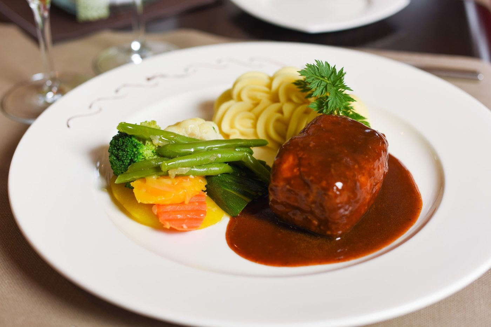
Essen im Sternen
Frischi’s Hacksteak, Appenzeller Cordon bleu, flambierte Kalbsleberli – im Wintergarten mit Blick in die Hügel, im Beizli oder im Garten. In der Küche: Ralph Frischknecht.
Tisch reservierenBeta-Vorschau — kein fertiges Design
Landgasthof Sternen · Dorfstrasse 97, 9055 Bühler AR · 250 m vom Bahnhof

Frischi’s Hacksteak, Appenzeller Cordon bleu, flambierte Kalbsleberli – im Wintergarten mit Blick in die Hügel, im Beizli oder im Garten. In der Küche: Ralph Frischknecht.
Tisch reservieren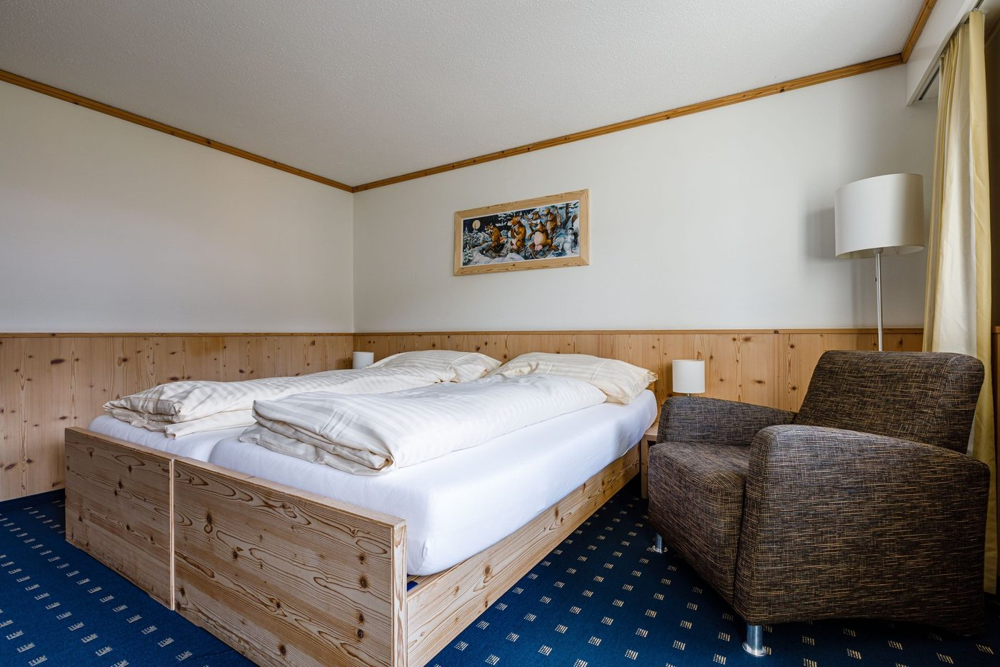
Acht heimelige Zimmer im Landhausstil, alle weg von der Strasse. Doppelzimmer CHF 180, Einzelzimmer CHF 100 – inklusive Frühstück und Kurtaxe.
Küche · Aus der Speisekarte
Ein Auszug aus der Karte «Fit in den Sommer» (Stand Juni 2024, als PDF auf sternen-appenzellerland.ch). Preise in CHF inkl. MwSt. Die Tageskarte und das Mittagsmenu erfahren Sie im Haus.
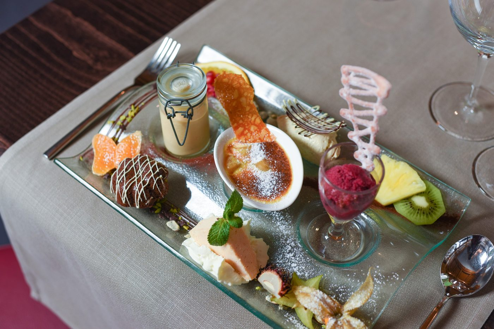
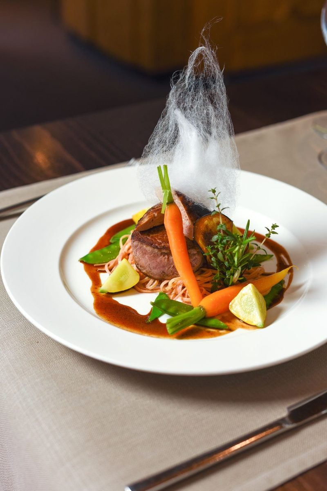
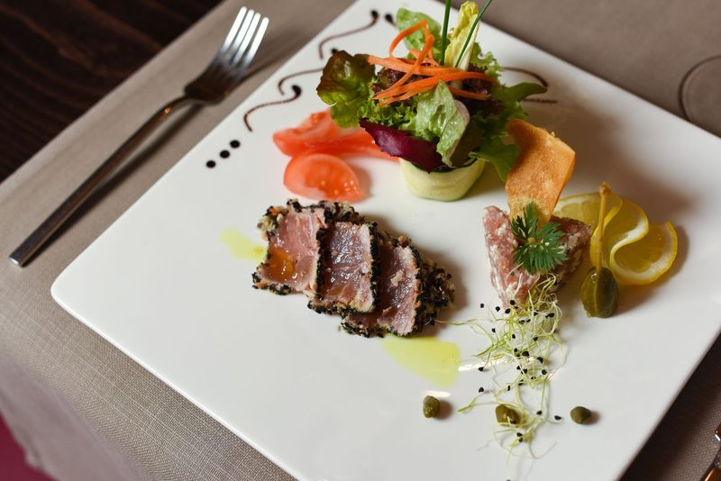
Seniorengerichte in kleineren Portionen, vegetarische Gerichte und Käseteller mit Schlorzifladen stehen auf der Karte. Für Coupes gibt es eine eigene Karte.
Jahresprogramm 2026
Das Jahresprogramm des Hauses, wie es als PDF veröffentlicht ist. Wine & Dine und das Silvester-Galamenu finden im bSONDERig statt – dem zweiten Haus der Familie Frischknecht in Stein AR. Platzzahl begrenzt, Reservation unter +41 71 793 17 58.
Sternenzauber · 6. November 2026 bis 28. Februar 2027
Im Winter steht im Garten das beleuchtete Kuppelzelt: geniessen und delikat essen, stimmungsvoll und gemütlich, mit Blick in den Nachthimmel über dem Appenzellerland. Ein Genuss der ganz besonderen Art – auch als Geschenk.
Tisch reservieren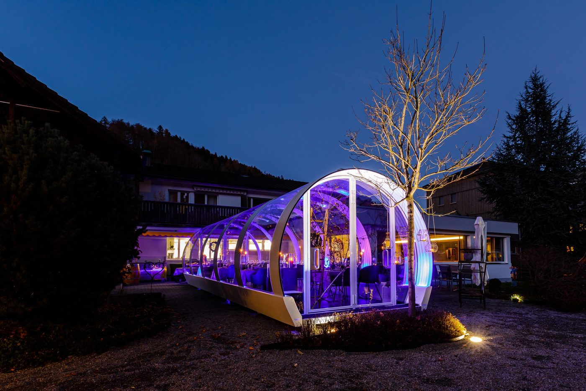
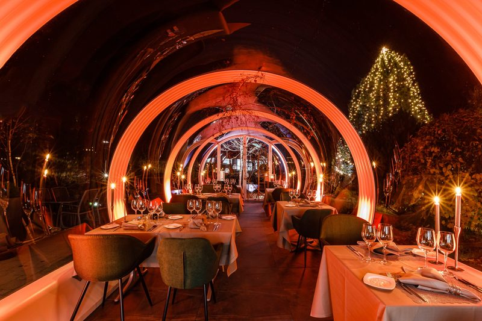
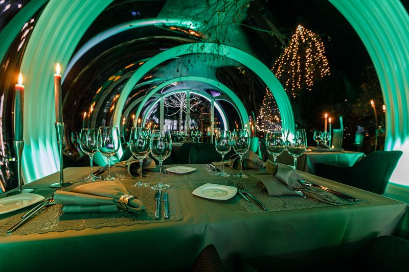
Räume · Für 2 bis 70 Personen
Familienfeste, Geburtstage, Firmungen, Hochzeits- und Firmenapéros, Vereine, Sitzungen: Die Räume des Sternen geben Ihnen den Platz, den Sie brauchen.
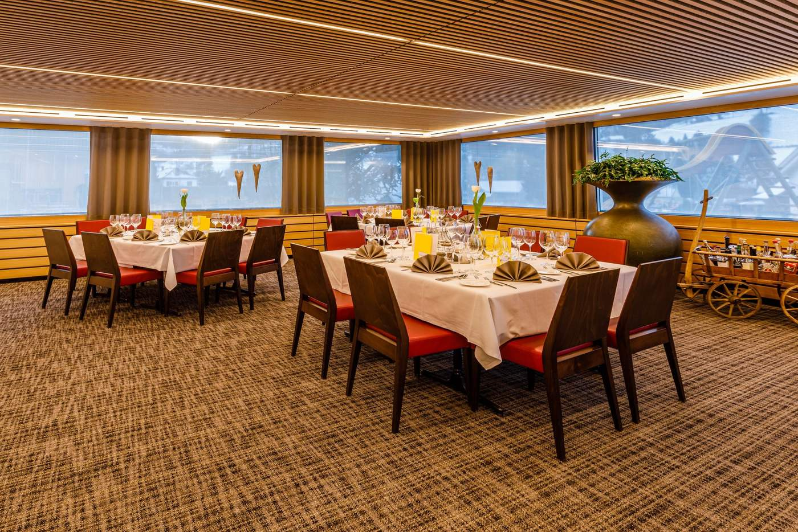
Im Sommer 2019 neu renoviert: sehr hell, mit drei grossen Fensterfronten zur Terrasse, zum Kinderspielplatz und in die typische Appenzeller Hügellandschaft. Für Familienfeste, Geburtstage, Firmungen und Anlässe in grösserem Rahmen.
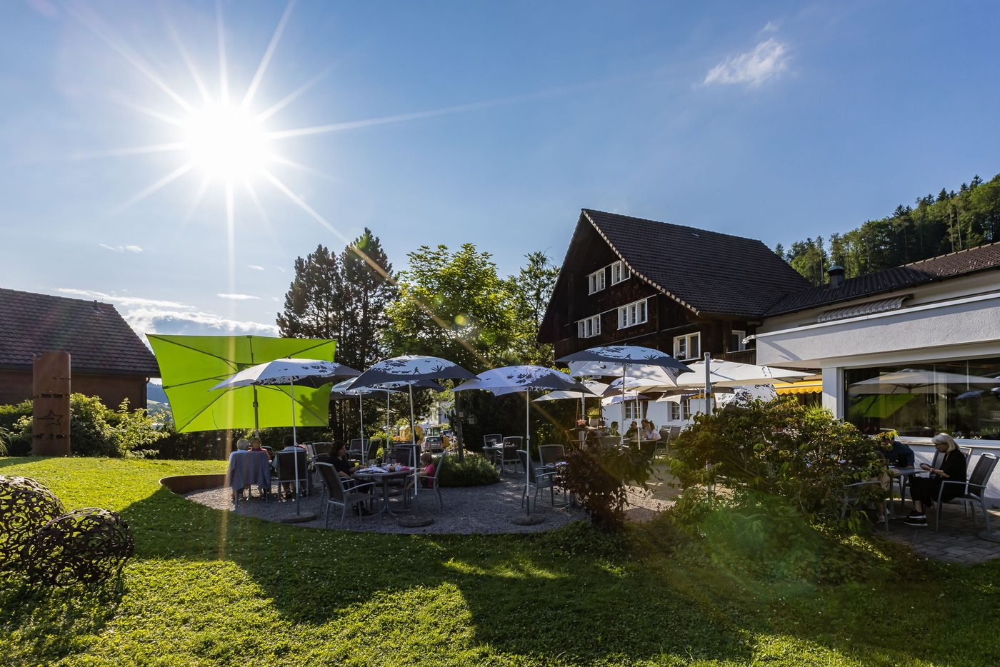
Ruhig auf der Hinterseite des Hauses, weg von der Strasse, mit freiem Blick in die Hügel. Für genussvolle Stunden, Hochzeits- und Firmenapéros. Der Kinderspielplatz ist gut überschaubar.
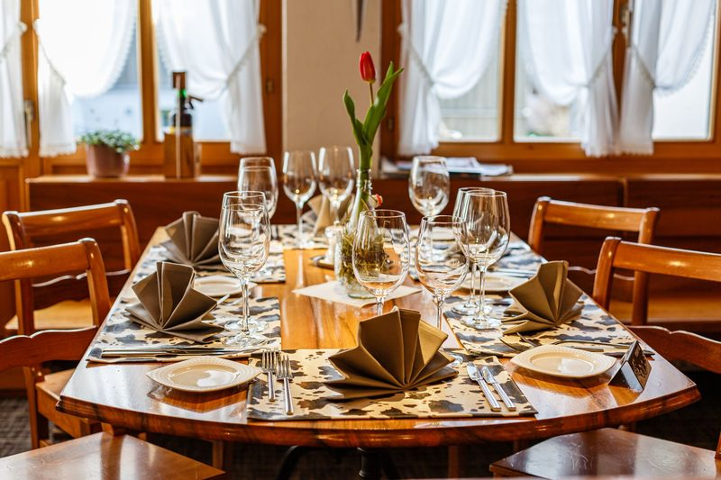
Rustikal, gemütlich, mit verschiedenen Nischen. Auch Feierabendbier-Gäste und Vereine sind herzlich willkommen.
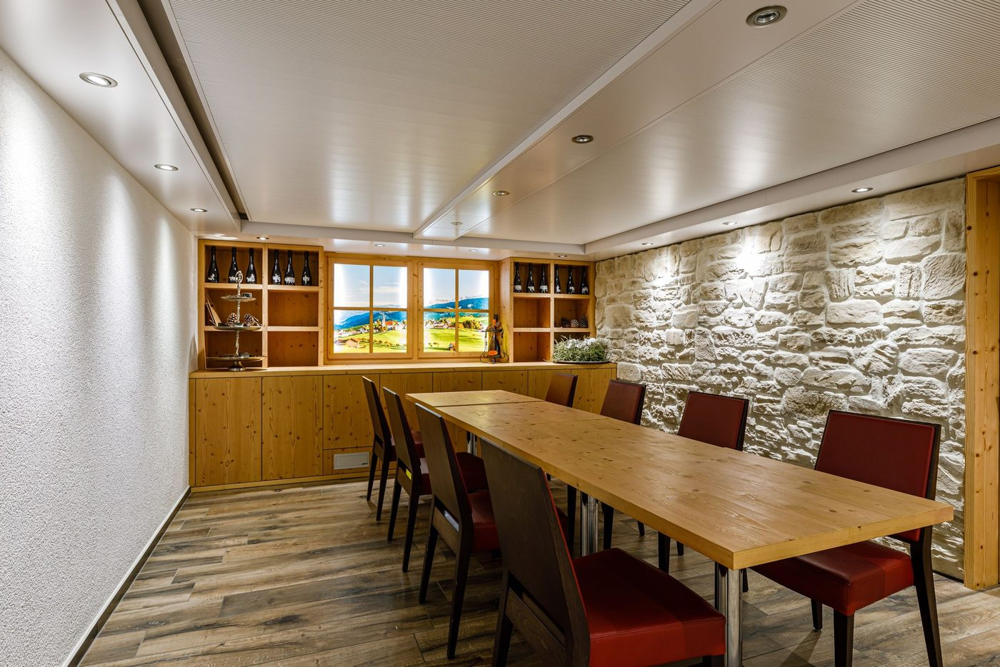
Ideal für kleinere Gruppen und Bankette in gemütlichem Ambiente. Grosser Fernseher, Anschlüsse für Laptop. Sehr ruhig – optimal für konzentriertes Arbeiten und Tagungen.
Zimmer & Preise
Neu im Landhausstil gestaltet, mit Blick in die typische Appenzeller Hügellandschaft. Alle Preise pro Zimmer und Nacht, inklusive Frühstück, Kurtaxe und MwSt.
| Zimmer | Belegung | pro Nacht |
|---|---|---|
| Einzelzimmer mit Dusche | 1 Person | CHF 100 |
| Doppelzimmer mit Dusche | 2 Personen | CHF 180 |
| FamilienzimmerDoppelzimmer, Ankleide, separates Zimmer mit Kajütenbett | 2 Erwachsene und Kinder | CHF 160–280 |
| Zusatzbett im Doppelzimmer | Erwachsene | CHF 55 |
| Kinder im Zimmer der Eltern | bis 6 Jahre / 6–12 / 13–15 | gratis / CHF 40 / CHF 55 |
| Halbpension (3 Gänge) | pro Person | + CHF 50 |
| Vollpension | pro Person | + CHF 78 |
| Ab 5 Übernachtungen | 10 % Rabatt |
Alle Zimmer sind Nichtraucherzimmer; Tiere sind in den Zimmern nicht erlaubt. Check-in ab 12 Uhr, Check-out bis 11 Uhr. Am Mittwoch (Ruhetag) erhalten Sie nach der Buchung einen Türcode für den Self-Check-in.
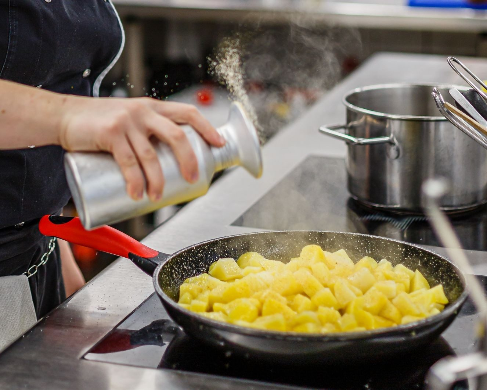
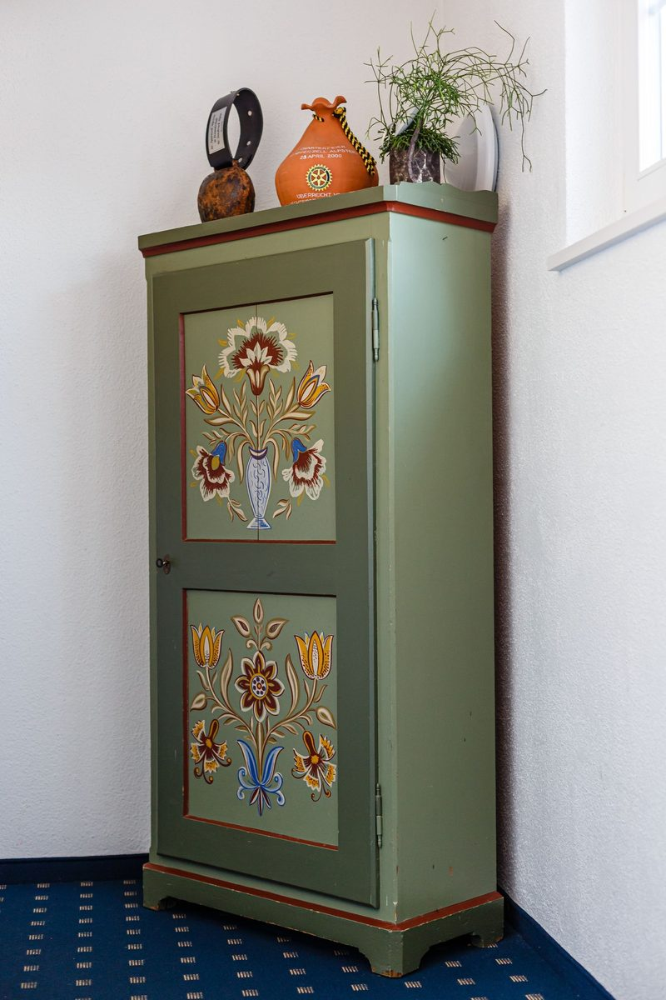
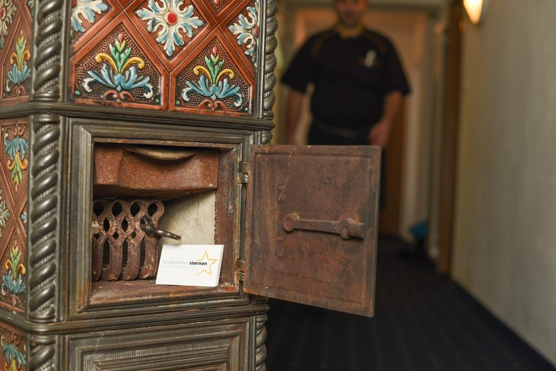
Gastgeber
Das Wirtepaar führt den Sternen mit seinen Kindern. In der Küche steht Ralph Frischknecht – Frischi’s Hacksteak und Frischi’s Hackbraten tragen seinen Namen. «Gastronomie mit Leidenschaft. Wo der Gast noch König is(s)t.»
Das ganze Team kümmert sich ausschliesslich um Ihre Wünsche – im Restaurant, im Hotel, in der Küche. Hier bildet das Haus auch aus: Im Februar 2026 verwöhnten die Lehrlinge die Gäste vier Wochen lang mit einer eigenen, kleineren Karte.
Gästestimmen
Auf local.ch: 4,8 von 5 bei 241 Bewertungen (27. Oktober 2026).
«Very very good restaurant. Staff always smiles and service is splendid. Spotless clean. Close to the station and they sell the guestcards for free train and cable cars up the mountains.»«Schöner Landgasthof. Hat alles perfekt geklappt und die Leute sind alle sehr herzlich. Perfekter Aufenthalt. Komme gerne wieder.»
«Sehr saubere Zimmer, sehr nettes Personal. Frühstück war auch sehr gut.»
«Immer wieder eine Freude im Sternen – auch unsere Kinder sind gerne hier. Gute Küche, nette Bedienung, Unterhaltung auf dem Spielplatz – da fühlt sich die ganze Familie umsorgt.»
Bühler · Appenzellerland
Bühler liegt an der Bahnlinie St. Gallen – Appenzell. Vom Bahnhof Bühler sind es 250 Meter zu Fuss; wer mit dem Auto kommt, parkiert kostenlos direkt vor dem Haus. Ihre Gastgeber geben Auskunft zur Gästekarte für Bahn und Bergbahnen.
Die Karte wird erst nach Klick geladen (OpenStreetMap, ohne Cookies).